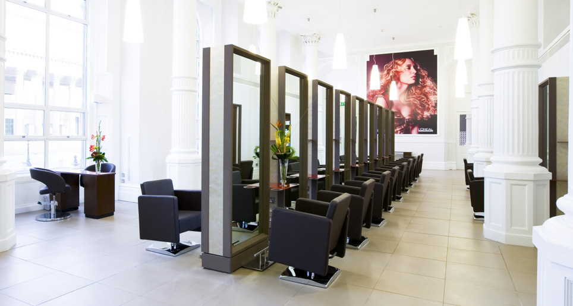
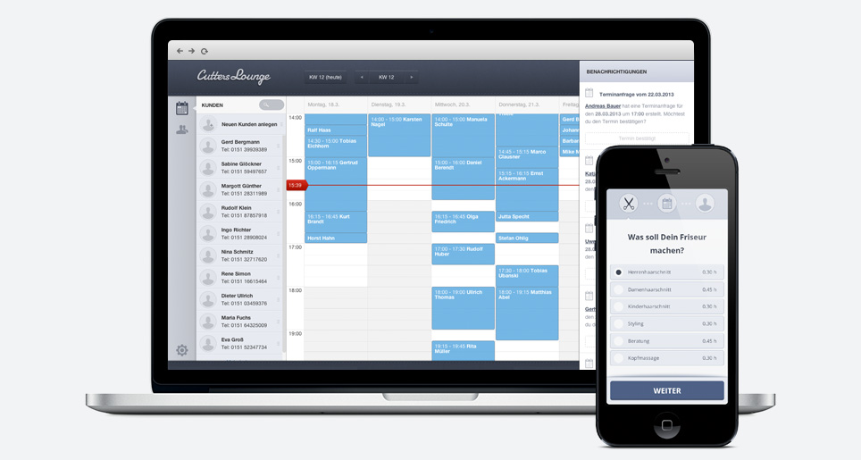
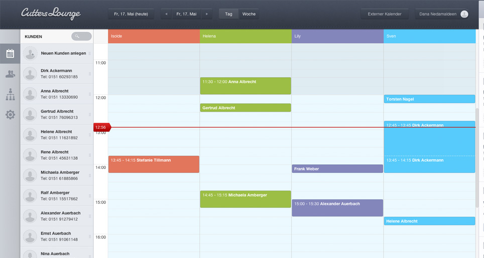
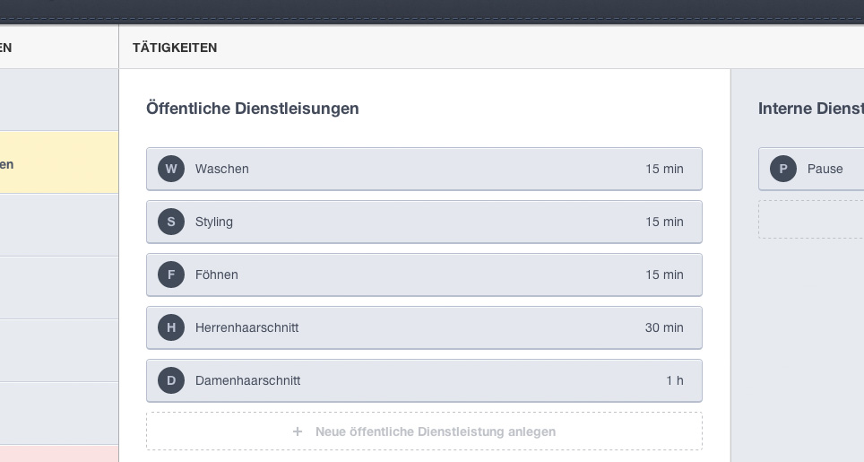
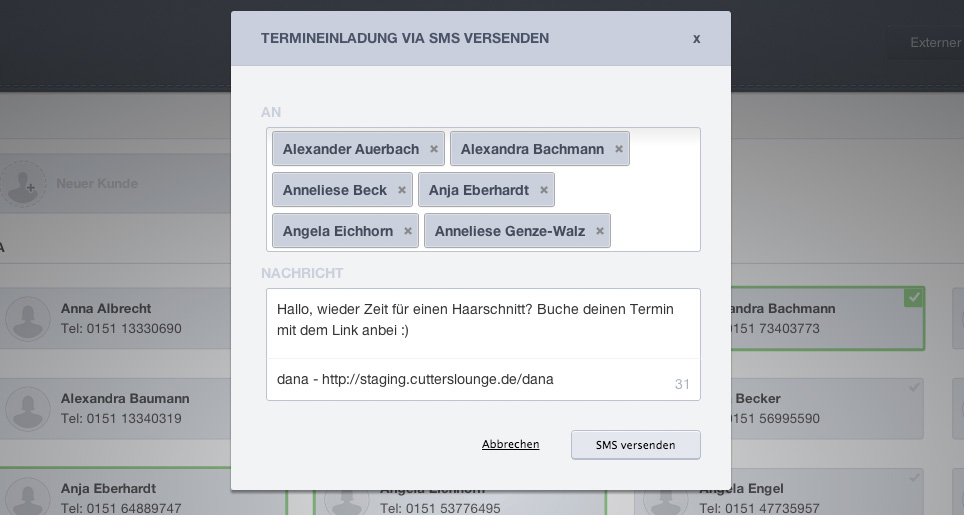

Friseur Mindestlohn in Deutschland
1. Kurzeinführung in die Debatte - Was ist ein Mindestlohn?
Am Montag, dem 22. April 2013, einigte sich die Gewerkschaft ver.di mit der Tarifgemeinschaft des Zentralverbands des deutschen Friseurhandwerks und den Landesinnungsverbänden in Würzburg auf einen bundesweiten Mindestlohn für Friseure. Dieser soll ab August 2013 in drei Stufen ansteigen, wobei der Osten Deutschlands mit 6,50 Euro und der Westen mit 7,50 Euro starten. Im August 2014 wird der Mindestlohn weiter erhöht und soll ab 2015 einheitlich in Deutschland mindestens 8,50 Euro pro Stunde betragen.
Zwar gilt dies vorerst nur für die Mitarbeiter von Innungsbetrieben, das heißt Mitarbeiter eines freiwilligen Zusammenschlusses von selbstständigen Friseuren (zur Förderung der allgemeinen Interessen), die Gewerkschaftsmitglieder sind. Aber schon in den nächsten Monaten soll beim Bundesarbeitsministerium der Antrag auf Allgemeinverbindlichkeit des Tarifvertrages gestellt werden, sodass der Mindestlohn dann für alle gilt, auch für Friseure ohne Abschlussprüfung.
"Auch wenn ver.di den Mindestlohn gerne früher und einheitlich umgesetzt hätte, ist das dreistufige Modell ein vernünftiger und tragfähiger Weg, um im Friseurhandwerk zu fairen Löhnen zu kommen" - Ute Kittel -
2. Herkunft und Grund dieser Entwicklung bei den Friseuren
Auch gut 20 Jahre nach der Wiedervereinigung Deutschlands besteht nach wie vor eine gewaltige Differenz zwischen den Gehältern in Ost und West. Während ausgebildete Friseure in Ostdeutschland in den ersten Berufsjahren einen Stundenlohn zwischen 3,05 Euro und 4,51 Euro einnehmen, verdienen Friseure im Westen fast doppelt so viel. Hinzu kommen Friseur- Discounter, "die sich durch Lohndumping Wettbewerbsvorteile verschaffen" (Rainer Röhr) und kleineren Friseurbetrieben schon lange ein Dorn im Auge sind. Diese profitieren von der "Geiz-ist-geil"-Mentalität vieler Kunden, die für einen Haarschnitt nur etwa 10 Euro ausgeben wollen. Durch einen Mindestlohn soll es solche Schnäppchenpreise, die oft zulasten der Angestellten gehen, indem diese länger arbeiten als im Vertrag steht und Sozialbeiträge hinterzogen werden, künftig nicht mehr geben.
"Fair für die Branche wäre es, wenn sich alle daran halten und kein ruinöser Wettbewerb über Lohnpolitik stattfinden kann" - Ute Kittel -
3. Vor- und Nachteile für Arbeitgeber und -nehmer
Die Einführung eines flächendeckenden Mindestlohnes von 7,50 Euro pro Stunde würde eine Preissteigerung um bis zu 40% bei Konsumgütern und Dienstleistungen zur Folge haben, berechnete das Münchner ifo- Institut. Dies würde einerseits die Verlagerung von Arbeitsplätzen ins Ausland bzw. deren Abbau, im Extremfall sogar Entlassungen, nach sich ziehen, andererseits die Förderung von Schwarzarbeit. Denn durch die Umwälzung der zusätzlichen Kosten auf den Preis werden sich die meisten Konsumenten die Haare wohl lieber schwarz schneiden lassen als höhere Friseurpreise anzunehmen. Außerdem ist die Fluktuation der Mitarbeiter in der Friseurbranche besonders hoch, da gerade viele junge Leute eher dazu tendieren, sich selbständig zu machen. Sie erhoffen sich dadurch nicht nur flexiblere Arbeitszeiten und ein höheres Einkommen, sondern wollen in ihrem eigenen Friseurladen ihre Kreativität ausleben und alles nach ihren eigenen Vorstellungen gestalten.
Ein Grund für das Interesse an einer einheitlichen Bezahlung sei der "ruinöse Preiswettbewerb" in der Branche, habe Rainer Röhr, Hauptgeschäftsführer des Zentralverbandes des Deutschen Friseurhandwerks, gesagt. Hinzu komme die Sorge um die Nachwuchssicherung, da die Zahl der Lehrlinge 2010 um 10%, 2011 um 12,3% und im letzten Jahr nochmals um 4,3% zurückging und somit mit 30. 000 jungen Leuten sich so wenige wie seit der Wiedervereinigung Deutschlands nicht mehr sich zum Friseur ausbilden lassen. Auch sollen die Kunden durch den Mindestlohn und die somit höheren Preise für Haarschnitte die Arbeit der Friseure wieder mehr wertschätzen und dadurch die Bereitschaft, mehr Geld für einen Haarschnitt auszugeben, steigen. Weiterhin soll der Mindestlohn vor Verarmung der Arbeitnehmer trotz Vollzeitbeschäftigung schützen, indem er ein Existenzminimum gewährleistet, ohne dass die Arbeiter auf zusätzliche Transferleistungen wie Hartz IV angewiesen sind. Dies hätte auch zur Folge, dass die Produktivität der Arbeitnehmer gesteigert würde, da diese bei einem höheren Stundenlohn deutlich motivierter an die Arbeit gingen. Besonders von der Armut betroffen sind alte Leute, da diese nur sehr geringe Renten bekommen, obwohl sie viele Jahre Vollzeit gearbeitet haben. Ein weiterer Vorteil eines Mindestlohnes ist auch, dass dadurch die Binnennachfrage steigt, was wiederum die Wirtschaft ankurbelt, da er sich positiv auf die Konjunktur auswirkt.
4. Was sind die Erwartungen und wie müssen sich die Friseure umstellen?
Angesichts dessen (dieser Folgen, die die Einführung eines bundesweiten Mindestlohns nach sich ziehen,) ist gutes Management für Friseurbetriebe gerade jetzt ganz besonders wichtig. Damit Friseure noch effizienter wirtschaften zu können, überlegten sich Sebastian Slomski und Dana Nedamaldeen, die Gründer des Starups Cutters Lounge, wie sie Friseuren die Arbeit erleichtern und deren Salon erfolgreicher machen können. (Cutters Lounge ist mehr als nur ein Organizer.) Es ist eine webbasierte, vielseitig verwendbare Software zur Organisation eines Friseursalons, die speziell auf die Bedürfnisse dieser Sparte eingeht.
Und so funktioniert's: als erstes legt sich ein Friseur einen Account an, indem er den Namen seines Salons, seine Email- Adresse und ein Passwort angibt. Hat der Friseur dann noch die AGBs akzeptiert, muss er nur noch auf "Registrieren" klicken und bekommt gleich darauf eine Email von Cutters Lounge, mit einem Link zur Website, um den Account zu aktivieren. Dies geschieht absolut kostenlos und unverbindlich. Cutters Lounge ist in der Basis Version absolut kostenlos - der Friseur kann jedoch zwischen 5 verschiedenen Angeboten wählen welche für ihn am geeignetsten ist. Das erste Paket ist absolut kostenfrei und beinhaltet den kompletten Funktionsumfang (Terminverwaltung, Kundenverwaltung, Kundenhistorie, Dienstleistungsverwaltung, Externer Kalender, SMS Versand, Verfügbarkeitsplanung). Die kostenpflichtigen Pakete steigen in der Funktionstiefe (Bsp. mehr SMS, mehr Kunden etc.) wobei das teuerste unlimited Paket gerade einmal 49 EUR/Monat kostet - Kosten, die mit einem Haarschnitt zu gedeckt sind.
Nach dem Login kann der Friseur die Dienste von Cutters Lounge nutzen. Oben auf der rechten Seite findet er einen Reiter mit dem Namen seines Friseursalons. Klickt er darauf, kann er zwischen "Mein Profil", "Dienstleistungen", "Öffnungszeiten", "Fehlzeiten" und "Logout" wählen. Unter "Mein Profil" findet er seine Zugangsdaten, sprich Email- Adresse, Passwort, Telefonnummer, den Namen des Salons, die Adresse und schließlich das Bundesland. Bei Bedarf kann er unter "Bearbeiten" seine Zugangsdaten ändern, falls er z. B. umzieht oder eine neue Telefonnummer hat. Auf der rechten Seite kann er auch sehen, seit wann er bei Cutters Lounge registriert ist.) Cutters Lounge unterscheidet zwischen externen und internen Dienstleistungen. Externe bzw. öffentliche Dienstleistungen sind für den Kunden im sogenannten "Externen Kalender" ersichtlich und können von ihm gebucht werden. Interne Dienstleistungen hingegen kann nur der Friseur selbst sehen und auch eigene interne Dienstleistungen anlegen, wie zum Beispiel "Waschen" oder "Föhnen". Dabei muss er nicht auf vorgefertige Dienstleistungen zurückgreifen, sondern kann selbst entscheiden, was er in seinem Salon anbieten will, egal ob "Damen- oder Herrenhaarschnitt", ob "Strähnchen machen" oder "Spitzenschneiden". Fügt der Friseur eine neue Dienstleistung hinzu, so kann er einen Namen sowie einen Buchstaben dafür festlegen, z. B. "A Damenhaarschnitt", damit er besser den Überblick behält. Anschließend wählt er die Dauer der jeweiligen Dienstleistung aus und speichert sie. Ähnlich verhält es sich beim Anlegen der Mitarbeiter. Neben dem Namen kann er nämlich auch eine Farbe für jeden Mitarbeiter auswählen, um so einerseits die Termine besser unterscheiden zu können andererseits, um die Auslastung der Mitarbeiter zu kontrollieren/stets im Blick zu haben. Auch die Öffnungszeiten lassen sich individuell einstellen. Unter "Fehlzeiten" kann er z. B. Urlaube, freie Tage etc. festlegen, damit der Kunde sofort sieht, wann der Salon wie lange geschlossen ist. Hier muss man sich um gesetzliche Feiertage nicht kümmern, da diese automatisch berücksichtigt werden und man zusätzlich darauf hingewiesen wird. Im "Externen Kalender" hat ein Friseur den Überblick über alle Termine und kann neue Kunden anlegen oder aus seiner alten Kartei übertragen.
Um einen Termin festzulegen, muss er den Kunden per "Drag & Drop" einfach auf die jeweilige Uhrzeit ziehen. Dann wählt er die gewünschte Tätigkeit sowie den Mitarbeiter aus, der den Kunden bedienen soll, gibt die genaue Uhrzeit an und speichert schließlich den Termin. Legt man einen Termin versehentlich auf einen Tag in der Vergangenheit oder auf einen freien Wochentag außerhalb der Öffnungszeiten, so wird man automatisch darauf aufmerksam gemacht. Als zusätzliches Feature können Friseure mit Cutters Lounge jedem Kunden, der seine Handynummer angibt, auch eine SMS schreiben, um sie zum nächsten Friseurbesuch einzuladen. Dies ist absolut einzigartig in der Branche und ermöglicht es dem Friseur, auf lästige Telefonanrufe, ebenso wie auf Emails zu verzichten. Ein Telefonanruf stört nämlich sowohl den Friseur bei seiner eigentlichen Arbeit, dem Haarschneiden, als auch weiß der Kunde nicht sofort, ob und wann genau er an dem Termin Zeit hat. Dies kostet beide Zeit und Nerven. Und anders als eine Email, bei der die Gefahr besteht, dass sie von den meisten Menschen entweder gelöscht, ignoriert oder erst viel zu spät geöffnet wird, ließt der Kunde eine SMS in der Regel sofort. Fragt also ein Kunde online einen Termin an, so sieht der Friseur diesen in Echtzeit im "Externen Kalender" und kann ihn sofort mit nur einem Mausklick bestätigen oder einen anderen Termin vorschlagen. Dieses intelligente Verfahren erhöht die Flexibilität, da der Friseur einen schnellen Zwischentermin einschieben kann und somit weniger Leerzeiten hat. Ferner hinterlässt eine SMS beim Kunden einen positiven Eindruck und animiert ihn eher dazu, das Angebot anzunehmen und öfter zum Friseur zu gehen.
Cutters Lounge überzeugt nicht nur durch elegantes Design und simple Handhabung - sämtliche Funktionen sind nämlich selbst für Friseure, die im Umgang mit einem Computer nicht so vertraut sind, absolut einfach zu nutzen, da selbsterklärend - sondern auch besonders dadurch, dass es webbasiert, also absolut modern ist und keine spezielle Hardware oder Installation benötigt. Da die ersten 14 Tage kostenlos und absolut unverbindlich sind, geht ein Friseur in dieser Testphase kein Risiko ein. Auch danach kann er Cutters Lounge monatlich kündigen. Durch die mobile Web App hat ein Friseur jederzeit und von überall Zugriff auf seine Daten und kann somit, wenn nötig auch von zuhause aus, seine Kunden verwalten. Auch die Möglichkeit, mit der Web App Termineinladungen online ohne Telefon oder Email zu verschicken, ist eine äußerst praktische und innovative Funktion.
Cutters Lounge kann man all jenen empfehlen, die trotz des Mindestlohnes weiterhin so viel Geld verdienen wollen wie bisher, ja ihren Umsatz sogar noch steigern wollen.